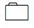
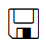

<mat-tree [dataSource]="dataSource" [treeControl]="treeControl">
  <mat-tree-node
    *matTreeNodeDef="let node"
    matTreeNodeToggle
    matTreeNodePadding
  >
  <mat-label>{{node.item}}</mat-label>
  <div>
    
    
    
  </div>
  <div *ngIf="checkIfLastLeafNode(node)">
    <mat-icon (click)="createNewFolder(node)">create_new_folder</mat-icon>
  </div>

  </mat-tree-node>

  <mat-tree-node
    *matTreeNodeDef="let node; when: hasNoContent"
    matTreeNodePadding
  >
    <mat-label>{{node.item}}</mat-label>
    <div appearance="fill">
      <mat-label>Name: </mat-label>
      <input matInput #itemValue placeholder="Ex. Lettuce" />
    </div>
    <button mat-button (click)="saveNode(node, itemValue.value)">Save</button>
  </mat-tree-node>

  <mat-tree-node *matTreeNodeDef="let node; when: hasChild" matTreeNodePadding>
    <mat-label>{{node.item}}</mat-label>

    <div  matTreeNodeToggle>
        
        
        
      
      
    </div>
    

  </mat-tree-node>
</mat-tree>
